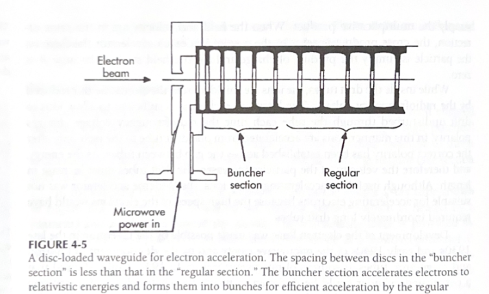
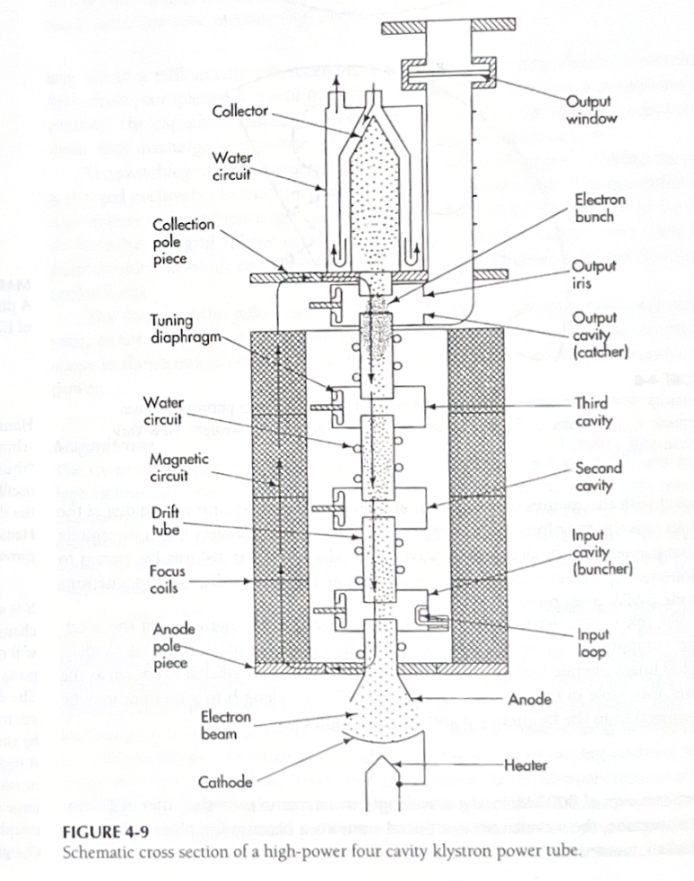

Aceleradores lineales
Física de la radioterapia. Máster de Física Biomédica
Requisitos
Para tratar pacientes con haces de fotones necesitamos al menos energías promedio del orden de 1 a 2 MeV. Considerando que aproximadamente el espectro de frenado tiene una energía media de entre la mitad y un tercio del potencial de aceleración, necesitaremos generadores con potenciales de 4-6 MV al menos.
También son deseables tasas de dosis del orden de varios Grays por minuto. En algunas aplicaciones (radiocirugía) las tasas pueden doblarse o incluso cuadriplicarse.
Los generadores electrostáticos (Van de Graff) o aceleradores directos no satisfacen estos requisitos. Se prefieren los generadores en los que la fuerza de aceleración se repite un número de veces:
- Cíclicos: betatrones, ciclotrones, sincrotrones
- Lineales: aceleradores lineales
Los aceleradores lineales1 son los generadores más extendidos, por sus características de alta tasa de dosis, diseño compacto y fiabilidad.
La mayoría van montados sobre cabezales (gantries) isocéntricos.
Principios de operación
Acelerador de electrones mediante microondas
- Los campos de microondas son guiados por un tubo metálico con cavidades resonantes denominado guía de aceleración.
- Además del campo de microondas inyectado se produce un campo reflejado
- Los electrones se introducen por uno de los extremos de la guía.
- En las paredes de la guía el campo electromagnético induce una corriente que a su vez genera un campo eléctrico que puede propagarse o ser campo un campo estacionario.
- El campo eléctrico ejerce una fuerza sobre los electrones y los acelera hasta velocidades próximas a la de la luz.
La potencia consumida por el acelerador
\[ P = \frac{V^2}{Z\,L} \]
- \(V\) potencial de aceleración
- \(Z\) Impedancia de shunt
- \(L\) Longitud de la guía de aceleración
Un potencial de aceleración \(V\) en el orden de 10 MV, con una impedancia de shunt \(Z\) = 100 M\(\Omega\)/m y una guía de 1 metro de longitud consumiría una potencia de 1 MW. Otros componentes del acelerador consumen potencias similares. Se requieren potencias del orden de 10 MW.
La velocidad de fase (propagación del campo eléctrico de aceleración inducido) está determinada por el diseño de las cavidades de la guía.
Una longitud de onda ocupa dos cavidades. \[ L = \frac{v}{2\,\nu} \]
Siendo \(L\) la longitud de una cavidad, \(v\) la velocidad de las partículas y \(\nu\) la frecuencia del campo de microondas. Para \(v\) próxima a \(c\), \(L\) deja de crecer

Componentes generadores del acelerador lineal
Modulador
- Es el circuito encargado de proporcionar la potencia necesaria para la aceleración (megawatios) en forma de pulsos cuadrados (el acelerador funciona por impulsos, no de forma continua).
- El primer elemento del modulador es un rectificador para pasar de la corriente alterna de alimentación a corriente continua.
- El elemento de potencia se compone de un banco de capacitores que se descargan secuencialmente mediante un circuito de inductores que los conecta, para hacer el pulso cuadrado y con una duración suficiente.
- La descarga de los capacitores se produce cuando se abre un tubo interruptor (thyratron) que consiste en un tubo triodo lleno de gas. Dos terminales polarizan una rejilla. Si la rejilla está polarizada positivamente fluyen electrones que ionizan el gas del tubo permitiendo el paso de las corrientes elevadas asociadas a los pulsos de potencia. Mientras la polaridad es negativa no fluye corriente y los capacitores se vuelven a cargar.
- El ciclo se repite de unas 50 a 500 veces por segundo y es controlado por un circuito de sincronización.
- El modulador alimenta el circuito generador de microondas de alta potencia, que puede ser un magnetron o un klystron
Magnetron
- Propio de aceleradores con menores exigencias de potencia (2 MW).
- Diodo cilíndrico con un cátodo central calentado mediante filamentos internos
- Ánodo externo con cavidades resonantes
- Un intenso campo magnético axial hace que la trayectoria de los electrones que se mueven hacia el ánodo cuando el modulador proporcionan un pulso DC sea una trayectoria espiral con cicloides.
- Los electrones emiten radiación en forma de microondas que resuena en las cavidades del ánodo.
- La resonancia se complementa con componentes alternas de campo eléctrico sobre el ánodo que concentran los electrones, producen canales que los guían e intensifican sus emisiones.
- Un antena de espira acoplada a las cavidades extrae las microondas que son guiadas hasta la guía de aceleración.
- La frecuencia se mantiene sintonizada con la guía mediante un circuito de realimentación.
Klystron

- No son osciladores, son amplificadores de potencia. Requieren un oscilador de microondas de baja potencia.
- Este oscilador inyecta microondas en la primera cavidad denominada buncher.
- Se inyectan electrones en el buncher acelerados por el pulso DC proporcionado por el modulador.
- La velocidad de los electrones (energía de varios keV) se modula por el campo eléctrico de microondas agrupando los electrones (bunches).
- Al llegar a la segunda cavidad (catcher) los electrones agrupados han perdido parte de la energía emitiéndola como un pulso de microondas amplificado.
- Mediante la sucesión de varias cavidades se pueden llegar a producir picos de potencia de hasta 25 MW.
Selectores de potencia
Órdenes de magnitud de frecuencia y dimensiones del acelerador
- Los aceleradores funcionan con campos de microondas con \(\nu\) = 3000 MHz, \(\lambda\) = 10 cm.
- Las cavidades son algo menores porque la velocidad de fase en la guía se reduce.
- Las guías rectangulares son 0.6 \(\lambda\) de ancho y entre (0.2-0.5) \(\lambda\) de alto.
- Los campos de microondas de alta potencia (salida del magnetron o el klystron) son llevados hasta la guía aceleradora (sección circular) mediante guías rectangulares. Todos estos circuitos van llenos de un gas dieléctrico, normalmente SF\({}_6\).
- Los campos magnéticos son perpendiculares a la guía y los eléctricos (aceleración de los electrones) paralelos a la dirección longitudinal de la guía.
- En aceleradores multienergéticos la cantidad de potencia que se inyecta se selecciona mediante un power splitter, dispositivo que refleja parte de la potencia a la guía y parte a una carga para su absorción.
- También es necesario absorber la potencia reflejada en la guía para evitar pérdidas en el magnetron o el klystron
Bombas de vacío
- La guía requiere presiones del orden de \(10^{-10}\) mm Hg para evitar arcos por ionización de gases, presiones difíciles de conseguir mediante métodos puramente mecánicos.
- Se utilizan sputter-ion pumps.
- Se componen de electrodos: cátodo de titanio, ánodo formado por cilindros conductores.
- Los electrodos se colocan en el seno de un campo magnético.
- Los electrones circulan entre cátodo y ánodo siguiendo trayectorias espirales e ionizan las moléculas de gas con las que interaccionan.
- Los iones gaseosos son intercambiados por átomos neutros de titanio cuando los iones golpean el cátodo.
- Los átomos de titanio se depositan sobre el ánodo.
Sección de aceleración

- Conjunto de cavidades acopladas donde se produce la aceleración del haz de electrones.
- En aceleradores con guías pequeñas, potenciales de aceleración de no más de 6 MV, la guía puede estar orientada en la dirección del haz de terapia.
- Aceleradores con energías superiores requieren guías en direcciones diferentes y necesitan una sección de deflexión.
Sección de deflexión, bending magnet
Dispositivo que cambia la dirección del haz de electrones mediante la aplicación de un campo magnético.
Para cambiar de una haz con orientación horizontal a uno vertical, el ángulo de deflexión puede ser de 90º o de 270º.
El radio de giro \(r\) está relacionado con la velocidad de los electrones \(v\), y la intensidad del campo magnético \(B\) \[ r = \frac{m_e\,v}{e\, B} \]
No todos los electrones llegan con la misma velocidad por lo que en bending magnets de 90º se produce una dispersión del haz. En los diseños de 270º hay un punto denominado foco triple en el que el haz vuelve a converger.
El foco triple es el punto óptimo para colocar el blanco para la producción de fotones.
Componentes del cabezal del acelerador
Blanco
Cuando se quiere tratar mediante un haz de fotones la energía que portan los electrones acelerados se tiene que convertir en rayos X.
El haz de electrones se hace interaccionar con un material de número atómico medio elevado para producir radiación de frenado.
En estas energías los fotones se emiten principalmente en la dirección de propagación de los electrones, por lo que el blanco se comporta como un filtro de transmisión.
El espesor óptimo del blanco es el detiene todos los electrones sin atenuar en exceso la radiación emitida. Blancos diferentes para diferentes energías.
Lámina dispersora, scattering foil
Cuando se quiere tratar mediante un haz de electrones el haz primario se dispersa en una lámina para que adquiera las condiciones de uniformidad y tamaño necesarias para el tratamiento.
En este caso se quiere evitar la presencia de radiación de frenado y la degradación de la energía del haz primario.
Colimador primario
Es un bloque de blindaje tronco-cónico que define el tamaño de campo máximo diponible
En los aceleradores modernos proyecta un campo circular en el plano del isocentro con un radio entre 20 y 28 cm.
Filtro aplanador, flattening filter
Filtro encargado de homogeneizar la intensidad del haz emitido desde el blanco.
Tiene forma de cono para compensar la distribución de radiación de frenado
Carrusel
- Es un sistema móvil que coloca la combinación adecuada de blanco, lámina dispersora y filtro aplanador en función de la energía seleccionada.
Cámaras monitoras
- La tasa de dosis se controla nominalmente mediante el número de pulsos inyectados en la guía. Los aceleradores disponen de una selección de valores prefijados de tasa.
- Sin embargo, el valor real de la tasa de dosis depende de muchos factores: intensidad de los pulsos de electrones, sintonización de la energía o ajuste de la velocidad de fase al tamaño de las cavidades resonantes que a su vez depende de la temperatura, enfoque del bending magnet, acoples mecánicos…
- Por debajo del filtro aplanador los aceleradores disponen de cámaras monitoras, cámaras de ionización que monitorizan la intensidad y estado del haz.
- Miden la cantidad de radiación emitida e interrumpen la irradiación al llegar a la cantidad programada.
- Las cámaras realimentan también sistemas de control para mantener la condiciones del haz (homogeneidad y simetría) e interrumpir la radiación en caso de inestabilidad.
- Las cámaras monitoras están divididas en sectores para poder medir simetría y homogeneidad.
Parámetros controlados por las cámaras monitoras
Unidad monitor
Unidad arbitraria de cuenta proporcionada por la cámara monitora relacionada con la cantidad de radiación que la atraviesa.
Calibración del acelerador
Proceso por el que se establece la relación entre la dosis especificada en unas condiciones concretas dadas y las unidades monitor.
Simetría y Homogeneidad
- Simetría: Parámetro que mide cuanto de iguales son las dosis en un haz en punto a la misma distancia del eje.
- Homogeneidad: Parámetro que mide la diferencia entre la dosis máxima y la mínima en la región útil del haz.
Control sobre la simetría y la homogeneidad
Ambos parámetros se ajustan cambiando la incidencia del haz de electrones sobre el blanco y la dirección del haz de fotones sobre el filtro aplanador.
Espejo
- Lámina semiplateada que forma un ángulo de 45º con el eje del haz en la que se refleja la luz emitida por una fuente colocada a la misma distancia del espejo que el foco.
Luz de simulación
Luz que permite visualizar la proyección de los campos de radiación sobre una superficie.
Colimación secundaria. Mordazas, Yaws
- Dos pares de bloques de material de alta atenuación (Z elevado) en dirección X e Y.
- Están motorizados y permiten definir tamaños de campo de forma rectangular de cualquier dimensión hasta 40x40 cm\({}^2\)
Factor de campo
Las mordazas está colocadas por detrás de las cámaras monitoras. La intensidad de radiación medida es previa a su colimación por las mordazas. La calibración va a depender del tamaño de campo.
Colimación terciaria. Colimador multilámina, MLC
- Conjunto de dos bancos opuestos de bloques contiguos (láminas) de material de alta atenuación.
- Las láminas van machihembradas para reducir la transmisión interlámina.
- Su extremo está diseñado para optimizar la penumbra.
- Un motor mueve cada bancada (carro) y otro individual cada lámina.
- Permiten definir formas arbitrarias dentro de la resolución del ancho de las láminas (0.25, 0.5, 1 y 2 cm).
- Son dispositivos dinámicos: se pueden mover durante la irradiación. Un sistema de control coordina y vigila su posición en relación al cabezal y a las unidades monitor.
Modulación de intensidad
Permiten producir perfiles arbitrarios de intensidad mediante la combinación de multiples haces con las formas adecuadas.
Elementos estáticos del acelerador
Estativo, Stand
Importancia del estativo
La estabilidad del estativo asegura la precisión del giro del cabezal que es especialmente relevante cuando se combinan haces para conseguir distribuciones de dosis optimizadas.
- Es la estructura fija del acelerador lineal que soporta el cabezal y permite su movimiento.
- Contiene los elementos de generación de potencia.
- Su función es proporcionar estabilidad y soporte estructural al acelerador, asegurando que todos los componentes se mantengan en la posición correcta durante el tratamiento.
- Componentes:
- Base: Es la parte que se ancla firmemente al suelo para conferir estabilidad al acelerador.
- Columna: Es la parte vertical del estativo que soporta el gantry y permite su rotación.
- Sistema de rotación: Permite que el gantry gire 360º alrededor del paciente y conecta el sistema generador con la guía de aceleración.
Elementos móviles del acelerador
Cabezal, Gantry
De la guía aceleradora en adelante todos los elementos del acelerador se mueven solidariamente alrededor de un eje perpendicular a la dirección de propagación del haz formando un conjunto al que se le denomina cabezal.
Colimador
El conjunto formado por el espejo, las mordazas y el MLC pueden girar solidariamente alrededor de un eje que contiene la dirección de propagación del haz.
Mesa de tratamiento
Aparte de desplazamientos lineales, la mesa de tratamiento puede realizar giros alrededor de un eje perpendicular al suelo.
Isocentro
Punto en el que se cruzan los ejes de giro del cabezal, del colimador y de la mesa de tratamiento.
Sistemas de refrigeración
- Varios componentes del acelerador (blanco, sección de deflección, guía de aceleración, la fuente de potencia de microondas) disipan cantidades apreciables de calor que tienen que ser evacuadas.
- Se utilizan varios circuitos con intercambiadores de calor entre ellos:
- Circuito primario con aceite.
- Circuito secundario con agua
- Circuito terciario con agua: propio del edificio en el que se encuentra la instalación de radioterapia, no la proporciona el suministrador del acelerador. Se tienen que verificar una serie de especificaciones (caudal, presión y temperatura del agua). Este circuito evacúa el calor al medio ambiente. En caso de necesidad suelen estar diseñados con la posibilidad de funcionar en agua perdida.
Integración de sistemas

Aceleradores lineales. Física de la radioterapia